1
Scan in at the door
2
Tick the paper register
3
Take a name tent and put it in front of you
4
Pick up a worksheet and wait with it
✋
STOP!
Don’t start it yet
And have a pen or pencil ready
While you wait
📖
1
Re-read the Week 6 reading (Romero et al. 2024)
2
Done that? Do the background reading
POLS0007 · Week 6 seminar
1
Randomisation makes the two groups alike on average, so there is no self-selection bias.
2
Self-selection bias = average Y0 of the treated group − average Y0 of the control group.
3
Alike on average is not identical: any single lottery leaves small chance differences.
4
Randomisation is unbiased at any sample size. Larger samples only make chance differences smaller, and they are never exactly zero.
5
Statistically significant: chance alone would rarely produce a difference this big. Not significant: it could easily be chance.
Mexico City
Puebla
59%
of people in Puebla live in poverty, against 36% across Mexico
Under half
of Mexican pupils leave primary school with basic proficiency in maths and Spanish
Low spending
Mexico spends less per pupil than almost any other OECD country
Low spending is often blamed. Would giving schools more money raise learning?
POLS0007 · Week 6 seminar
200
primary schools applied for the grant
Random lottery
X = 1
101 schools get the grant
X = 0
99 schools do not
Y
Test scores in maths and Spanish at the end of primary school (age 11–12), June 2018
X is the treatment: grant or no grant. Y is the outcome: test scores.
A cash grant, paid directly to the school, to spend on improvements. The same test was also taken in 2015, before any grants were paid.
POLS0007 · Week 6 seminar
Blue = treatment, orange = control
Simple
flip a coin
Group sizes vary (here 9 treatment, 3 control)
coin: heads = treatment
Complete
bits of paper from a bag
Exactly 100 treatment and 100 control slips
We know the group sizes
Block
randomise within important groups
A separate bag for each group
Guarantees balance on that variable
women
men
Cluster
randomise whole groups
Draw whole schools or villages
Use when people in a group affect each other
Cost: fewer units, less precise
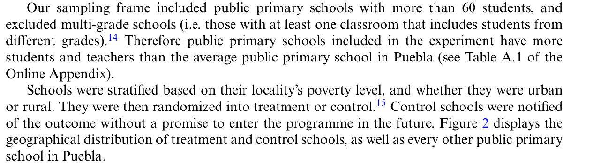
Romero et al. used two ideas together
Schools were stratified by poverty and urban/rural, then drawn by lottery within each group: block. The unit drawn was the school, not the pupil: cluster.
Block: a lottery within each group
poorer, urban
poorer, rural
less poor, urban
less poor, rural
Each group split evenly: balance guaranteed
Cluster: draw schools, not pupils
Same 4 schools, same pupils, drawn two ways
Draw pupils one by one: about 6,800 units
Draw whole schools: 200 units
Classmates are split between treatment and control
No school is split, but only 200 units: less precise
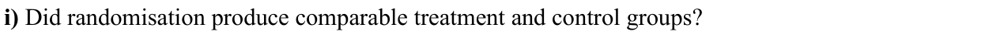
“Comparable” = balanced: alike on average, before the grant
Which evidence?
Table 1: the balance table
Column 3 shows the difference between grant and control schools
What counts as comparable?
Groups alike on average before the grant
Differences small, and none has a star
Shape of the answer
Verdict: yes or no
Evidence: numbers from Table 1
Because: random assignment
Average test score
0
20
40
60
60
74
65
Control schools
Treatment schools
Treatment schools without the grant (Y0)
self-selection
bias 5
true effect 9
What we see: 74 − 60 = 14
Question
Treatment schools average 74 and control schools 60. Without the grant, treatment schools would have averaged 65. What is the self-selection bias?
Self-selection bias = 65 − 60 = 5
average Y0 treatment − average Y0 control
True effect = 74 − 65 = 9
What we see 14 = true effect 9 + self-selection bias 5
Y0 = the test score a school would get without the grant
We can never see Y0 for treatment schools. But we can see what predicts Y0: baseline characteristics, measured before the grant.
2015 test scores
Pupils who scored high in 2015 tend to score high later
Poverty level
Poorer areas tend to have lower scores
Management quality
Better-run schools tend to have higher scores
If treatment and control schools match on these, their Y0 should match too. Table 1 checks this.
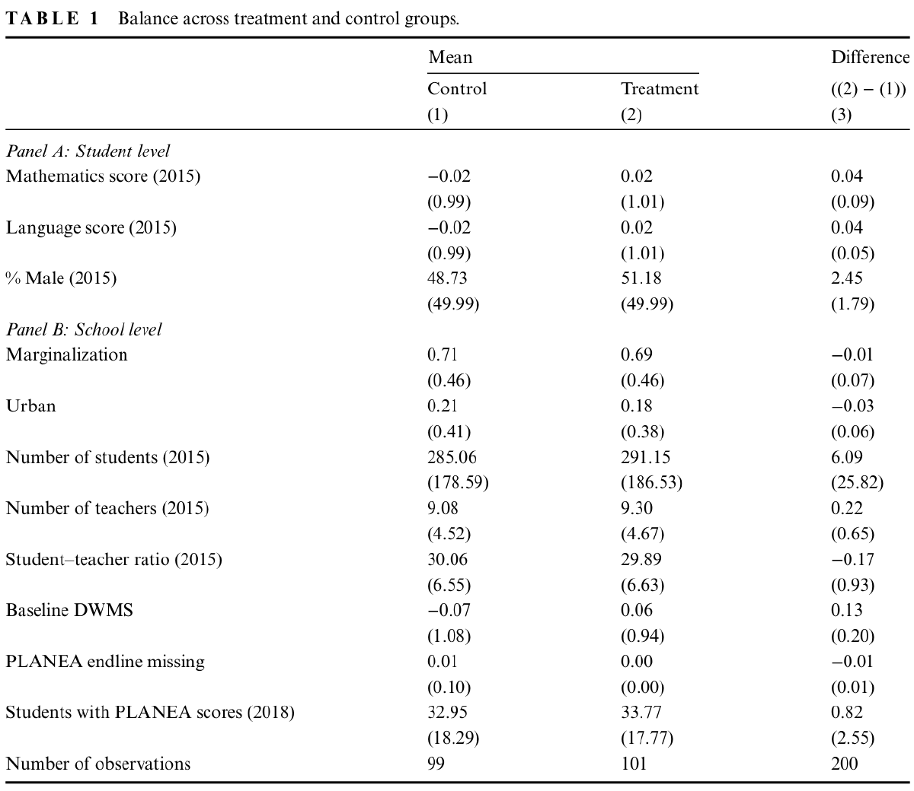
The three columns
Column 1: average for control schools (no grant)
Column 2: average for treatment schools (grant)
Column 3: treatment minus control. Look here
The rows
Each row is a baseline characteristic
Marginalization = how poor the area is (higher = poorer)
Baseline DWMS = management quality
Grey rows are after the grant: ignore
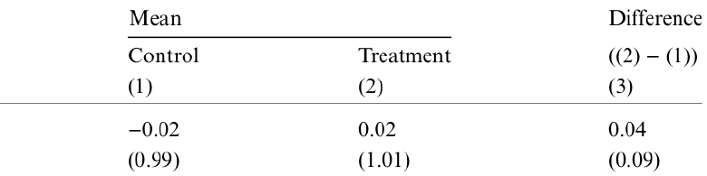
Stars
* p<0.10, ** p<0.05, *** p<0.01
None here
Columns 1 and 2: mean and SD
Control schools averaged −0.02 and treatment schools 0.02
SD (in brackets): how spread out pupils’ scores are around the average. 0.99 means a typical pupil is about 1 point above or below
one SD
Column 3: difference and SE
0.02 − (−0.02) = 0.04
SE (in brackets): if the lottery were re-run, how much the difference would move by chance alone. 0.09 means about 0.09 either way
one SE
1. Any stars?
Look down column 3
None of the rows has a star
2. Differences small?
Compare each difference with its SE
e.g. Students: 6.09 (SE 25.82)
3. Key predictors?
2015 maths and language
Marginalization
Management quality
Say it like this:
On [characteristic] the groups look very similar: the difference is [number] (SE [number]) and has no star, so it is not statistically significant.
e.g. Marginalization: difference −0.01 (SE 0.07), no star.
Verdict
Yes. On every characteristic in Table 1 the groups look very similar.
Evidence
2015 maths and language scores, gender, marginalization, urban/rural, school size, staffing and management quality (DWMS)
None of the differences is statistically significant: none has a star
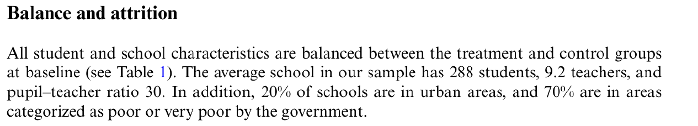
The authors
draw the same conclusion in the text
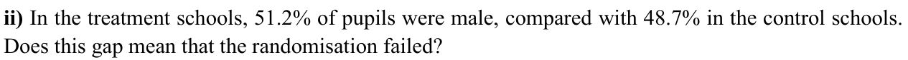
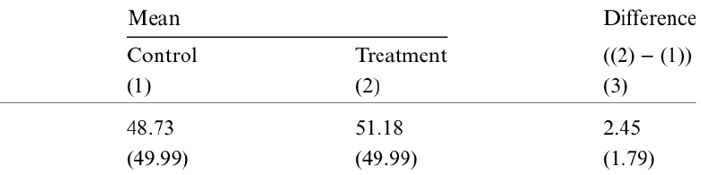
Reading the row
48.73 and 51.18: average % of pupils who are male, control and treatment
Difference: 51.18 − 48.73 = 2.45
SE 1.79: how far chance alone typically moves it
The brackets in columns 1 and 2 are SDs. For a yes/no variable like this they are always about 50, so ignore them here.
If we ran the lottery again, would we get the same difference?
Each dot is a school: pink = fewer boys, blue = more boys
Grant (101): 50.9% boys
Control (99): 52.6% boys
−1.7
difference
Grant (101): 52.2% boys
Control (99): 51.3% boys
+0.9
difference
Grant (101): 53.0% boys
Control (99): 50.5% boys
+2.4
difference
2,000 lotteries
Difference in % boys, grant minus control
−6
0
+6
Ours: 2.45
About 1 in 6 lotteries gives a difference this big: chance, not failure
Verdict
No. Randomisation makes the groups the same in expectation, not in every single draw.
Because
Re-run the lottery many times and the differences average out to zero
In one draw chance differences remain: with only 200 schools, a few percentage points is expected
About a dozen characteristics are checked, so it would be surprising if none differed a little (about 1 in 20 flagged by chance)
A balance table checks for bad imbalances (by chance or improper randomisation). It does not need every difference to be exactly zero
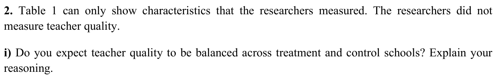
What we know
Teacher quality affects scores: it raises Y0 (score without the grant)
Table 1 cannot show it: teachers were not measured
Your task
Could grant schools still have better teachers than control schools?
Answer with a verdict and the reason
Y0 = score without the grant
Teacher quality is not measured: darker = better teachers. Each dot is a school.
Grant (101): avg +0.08
No grant (99): avg −0.02
+0.10
difference
Grant (101): avg −0.02
No grant (99): avg +0.07
−0.09
difference
Grant (101): avg +0.03
No grant (99): avg +0.02
+0.01
difference
30 lotteries
Difference in average teacher quality
−0.3
0
+0.3
Average of the 30 differences: -0.02
The lottery balances what we cannot measure, just like the characteristics in Table 1
20 schools
−1
0
+1
A big difference by luck is plausible
200 schools (Puebla)
−1
0
+1
A large difference is unlikely
2,000 schools
−1
0
+1
Smaller still, but never exactly zero
Difference in average teacher quality, grant minus no grant
Randomisation is unbiased at every size. Only the chance of a difference shrinks: no size guarantees identical groups.
Verdict: yes, in expectation
Because
Teacher quality affects scores (a higher Y0), but assignment was by chance, so teacher quality cannot have influenced who got the grant
Randomisation balances unmeasured characteristics just as it balances the ones in Table 1: the key advantage of an experiment
Caveats
“In expectation” is not “exactly”: with 200 schools a large difference is unlikely
We cannot check this directly: balance on 2015 scores and management quality is reassuring, but the case rests on the randomisation itself
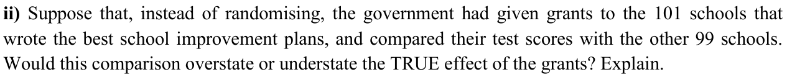
Compare
The 101 best-plan schools (grant)
with the other 99 schools
Ask
Who would score higher without the grant?
Best-plan schools or the other 99? (a higher Y0)
Decide
Overstate or understate the TRUE effect?
Explain it
Y0 = score without the grant
Each dot is a school, placed by its plan quality (across) and its Y0 (up).
A: treatment = the 101 best plans
B: treatment = 101 schools drawn at random
Y0 = score without the grant
Y0 = score without the grant
Plan quality: worst → best
Plan quality: worst → best
Treatment average Y0 = 55.2
Control average Y0 = 46.5
Treatment average Y0 = 50.9
Control average Y0 = 50.9
Schools with better plans tend to be better organised, so they tend to score higher even without the grant.
Which group has the higher average Y0?
Best plans chosen: treatment or control?
Choosing by lottery
Plan quality plays no part: 50.9 = 50.9, the same
The same schools, now placed along the Y0 axis. Blue = treatment (best plans), orange = control.
lower Y0
Y0 = score the school would get without the grant
higher Y0
Control schools'
average Y0
Treatment schools'
average Y0
self-selection bias
Treatment schools already had a higher average Y0 before any grant.
true effect
Treatment schools' average
score with the grant
What we would see = self-selection bias + true effect: overstates
With a lottery the two averages would match: no self-selection bias.
Control schools
Treatment schools
Treatment schools without the grant (Y0)
A: best-plan schools get the grant
Average test score
20
40
60
Before the grant
After the grant
true effect
self-selection
bias
We see 60 − 45 = 15
= self-selection bias 10 + true effect 5: overstates
B: a lottery decides
Average test score
20
40
60
Before the grant
After the grant
true effect
We see 60 − 55 = 5 = true effect 5
No self-selection bias: lines start together
Verdict: overstate
Because
Best-plan schools likely have better-organised, more motivated staff and better teachers, so their pupils would have scored higher without the grant (a higher Y0)
So the comparison mixes the effect of the grant with self-selection bias
The bias is positive: selected schools have a higher average Y0 than the other 99, so we could see a positive “effect” even if the grant did nothing
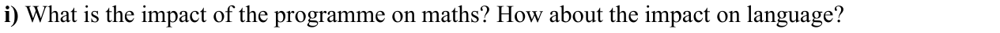
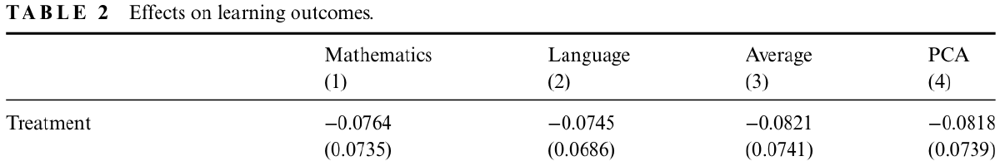
Columns = outcomes
(1) Mathematics, (2) Language
(3) average, (4) combined index
Treatment row
Already grant minus control
Negative: grant schools scored lower
In brackets
The standard error
No star: not significant
Verdict
Grant schools scored lower in both maths and language, but the differences are not statistically significant
Evidence
Maths −0.0764 (SE 0.0735) and language −0.0745 (SE 0.0686)
None has a star
Meaning
Differences this size could easily arise by chance, so this study finds no evidence that the grants raised test scores
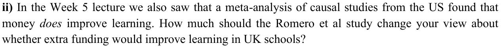
Believe the study for Puebla
It is well designed (randomised, balanced): high internal validity
So we can believe its result: small grants did not raise test scores in Puebla
But it tells us little about UK schools, for three reasons:
1. A tiny treatment
US$16 per pupil per year
2. One study
Favour meta-analyses over one study
3. Different schools
English and Mexican schools differ (e.g. budget discretion)
Spending per pupil per year
This study: US$16
Meta-analysis focus: about US$1,000
about 60×
What this means
US$16 is about 1.5% of the roughly US$1,090 already spent per pupil
The “20% increase” is 20% of the small amount left after staff pay
A very small treatment: not a test of whether money improves learning
Not much
The study is well designed with high internal validity, so we can believe its result: small grants did not raise test scores in Puebla
But it says little about UK schools: the treatment was tiny (US$16 per pupil, about 1.5% of spending), it is one study (favour meta-analyses), and English and Mexican schools differ
When a study finds no effect, ask:
Is the explanation in the design (e.g. a very small treatment) or in the world (money does not improve learning)?
1
Randomisation makes the two groups alike on average, so there is no self-selection bias.
2
Self-selection bias = average Y0 of the treated group − average Y0 of the control group.
3
Alike on average is not identical: any single lottery leaves small chance differences.
4
Randomisation is unbiased at any sample size. Larger samples only make chance differences smaller, and they are never exactly zero.
5
Statistically significant: chance alone would rarely produce a difference this big. Not significant: it could easily be chance.
📄
⬇️
Face down
until “go”
G1
G1
G2
G3
G4
Write your group
at the top
A
B
C
D
✏️
Circle your answer
one per question
🤫
No talking
POLS0007 · Week 6 seminar
5:00
G3
A
B
C
D
🤫
🤫
No talking until I have all the sheets
📄✋
POLS0007 · Week 6 seminar
✏️
⬇️
Pencils down
G1
→
G2
→
G3
→
G4
→
🙋
Pass it along the row
G?
Group at the top
G1 · G2 · G3 · G4
🤫
POLS0007 · Week 6 seminar